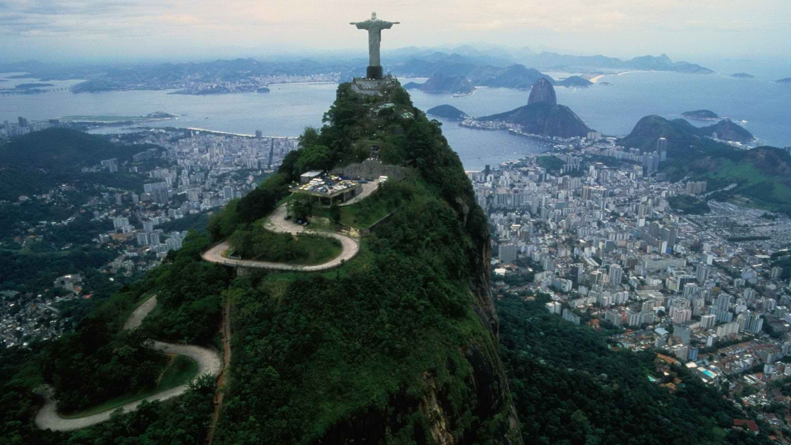
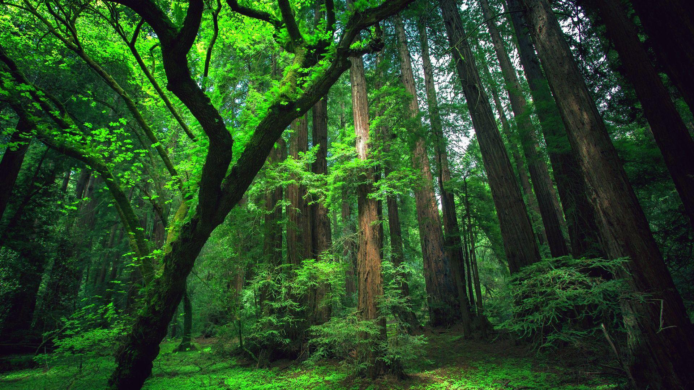

Cristo Redentor e Corcovado

Iguaçu Falls

Brazília nemcsak a futball, a karnevál és a szamba hazája, hanem elképesztő természeti csodák és világhírű nevezetességek otthona is. Az ország hatalmas területén trópusi esőerdők, lélegzetelállító vízesések, meseszép strandok és nyüzsgő nagyvárosok várják a látogatókat. Legyen szó a lenyűgöző Amazonas vidékéről, a híres Krisztus-szoborról Rio de Janeiróban vagy a festői Copacabana partjairól, Brazília minden szeglete egy újabb kalandot rejt. Ismerd meg az ország legnépszerűbb és legkülönlegesebb látnivalóit – egy olyan helyre invitálunk, ahol a természet szépsége és a kultúra gazdagsága páratlan élményt nyújt!